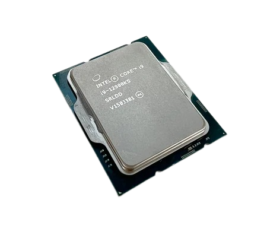
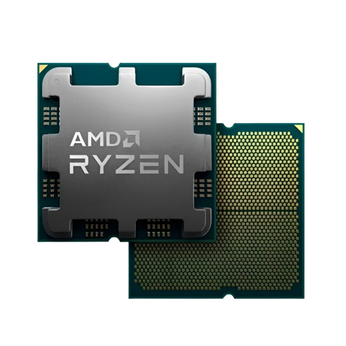

Red Gaming PC:

This red gaming PC has some really cool Lian Li fans!
Specs:
- Ryzen 7 9800X3D
- RTX 4070 Ti Super
- 32GB DDR5
- 4TB SSD
- x870E-E Rog Strix
Blue Gaming PC:

This is a awesome blue gaming PC!
This blue gaming pc, is really good for gaming besides being really aesthetic!
Specs:
- Ryzen 5 9600x
- RTX 5070 Ti
- 16GB DDR5
- 2TB SSD
- b850-E Tuf Gaming
Purple Gaming PC:

This is a really good looking purple gaming PC!
It has a really cool Tuf Gaming GPU, and the case is really cool too!
Specs:
- Ryzen 9 9950X3D
- RTX 5090
- 128GB DDR5
- 16TB SSD
- x870E-E Rog Dark Hero
Orange Gaming PC:

This is a beautiful orange PC!
This PC has a really cool case! And some really nice fans aswell!
Specs:
- Ryzen 7 7800X3D
- RTX 5060 Ti
- 32GB DDR5
- 1TB SSD
- b650-E Tuf Gaming
Green Gaming PC:

This is a really good looking green gaming PC!
This PC has a really cool looking GPU!
Specs:
- Intel Core i5 14660KF
- RTX 5070
- 16GB DDR5
- 1TB SSD
- b650-E Tuf Gaming
Pink Gaming PC:

This is a really good looking pink gaming PC!
This PC has a really cool cooler and some really nice RAM sticks!
Specs:
- Intel Core i7 14700K
- RTX 5080
- 32GB DDR5
- 2TB SSD
- x870E-E Rog Strix
Cyan Gaming PC:

This is a really good looking cyan gaming PC!
This PC has a really cool looking case and some really nice fans!
This PC also has some of the most beautiful RAM sticks i have ever seen
Specs:
- Intel Core i9 14900K
- RTX 5080
- 96GB DDR5
- 4TB SSD
- x870 Aorus Master
White Gaming PC:

This is a really good looking white gaming PC!
This PC has a really cool looking case and some really nice RAM sticks!
This PC also has a really cool screen!
You can use that screen to check your temps!
Specs:
- Ryzen 9 9950X3D2
- RTX 5090
- 128GB DDR5
- 16TB SSD
- x870E-E Rog Dark Hero
Definition and Examples of some PC components:
What is a processor?
A processor (CPU) is the brain of the computer, it's a small chip that handles every click and command you make by performing billions of tiny calculations every second.
Processors are measured in GHz (gigahertz), which indicates how many cycles per second they can perform.
The more GHz a processor has, the faster it can process information, which means your computer will run smoother and faster when you have a powerful CPU.
Some known Processor brands are Intel and AMD:
Intel:

An Intel CPU is a square silicon chip protected by a silver metal lid (IHS) for cooling, with a bottom side featuring gold LGA contact pads
Some good things about Intel CPUs:
- Speed: Leading single-core performance for gaming and fast app loading
- Media: QuickSync tech for industry-best video rendering and streaming
- Reliability: Exceptional software compatibility and stable integrated graphics
- Optimization: While rare now, some older or niche software is still better optimized for Intel architecture first
- Gaming Latency: In some mid-range models, they can slightly trail Intel in "instant" responsiveness in certain high-speed games
- Memory Sensitivity: AMD processors are famously picky about RAM speed; to get the best performance, you often have to buy specific, faster memory
Some bad things about Intel CPUs:
AMD:

An AMD CPU is a square silicon chip topped with a silver metal lid (IHS) for heat management. Depending on the model, the bottom features either gold pins (PGA) or flat gold contact pads (LGA) to connect to the motherboard
- Value: Generally offers more "cores" and "threads" for the price, making it superior for heavy multitasking and workstation tasks
- Longevity: Known for the AM4/AM5 sockets, which support many generations of chips, allowing you to upgrade your CPU without buying a new motherboard
- Efficiency: Modern AMD chips often use less power and run cooler than Intel's top-end equivalents while maintaining high performance
- Optimization: While rare now, some older or niche software is still better optimized for Intel architecture first
- Gaming Latency: In some mid-range models, they can slightly trail Intel in "instant" responsiveness in certain high-speed games
- Memory Sensitivity: AMD processors are famously picky about RAM speed; to get the best performance, you often have to buy specific, faster memory
Some good things about AMD CPU's:
Some bad things about AMD CPUs:
What is a graphics card?
The Graphics Card (or GPU) is the part of a computer responsible for everything you see on your screen.
It acts as a dedicated translator that turns complex code from your apps into the visual interface, shapes, and colors that appear on your monitor.
If the Processor (CPU) is the "brain" that does the thinking and logic, the Graphics Card is the "artist" that draws the pictures.
Some known Graphics Cards brands are Nvidia and AMD:
Nvidia:

Nvidia GPUs are typically rectangular circuit boards with a large central chip (the GPU) covered by a metal heatsink and fan for cooling. They have multiple video output ports (HDMI, DisplayPort) on the back edge and are designed to fit into a PCIe slot on the motherboard
- AI & Features: Industry-leading DLSS technology that uses AI to boost frame rates and image quality significantly
- Ray Tracing: The best performance for realistic lighting and reflections, making games look like high-budget movies
- Work & Streaming: The CUDA and NVENC cores make them the #1 choice for professional video editing, 3D rendering, and high-quality live streaming
- Price: They usually carry a "tax" or premium price, costing more than AMD or Intel for the same amount of raw power
- VRAM: Nvidia is often stingy with Video Memory on mid-range cards, which can limit performance in very high-resolution gaming
- Closed Ecosystem: Most of their best software features are locked to Nvidia hardware, whereas competitors' features often work on all brands
Some good things about Nvidia GPU's:
Some bad things about Nvidia GPU's:
AMD:

An AMD GPU is often referred to as the "Radeon" series. Physically, these cards look similar to Nvidia's thick, rectangular bricks with 2 or 3 large fans but they often feature a more industrial or "gamer" aesthetic with red and black accents. Like CPUs, they have a circuit board on the bottom and a protective shroud on top to manage heat
- Value for Money: AMD is the king of "Price-to-Performance." You typically get more raw gaming power and higher frame rates for every dollar spent compared to Nvidia
- Generous VRAM: AMD cards often come with more Video Memory (VRAM) than Nvidia cards at the same price. This makes them "future-proof" for newer games that require a lot of memory for high-resolution textures
- Open Standards: Their software features, like FSR (FidelityFX Super Resolution), are open-source. This means they work on almost any hardware, and AMD is a favorite for users who use Linux or the Steam Deck
- Ray Tracing: While AMD has improved, they still lag behind Nvidia in ultra-realistic lighting and shadows. If you want "movie-like" visuals, AMD isn't quite as fast
- AI & Productivity: They aren't as widely supported as Nvidia for professional work like 3D animation, AI training, or high-end video streaming
- Power Consumption: Some high-end AMD cards can be less efficient, drawing more electricity and generating more heat to match the competition's performance
Some good things about AMD GPU's:
Some bad things about AMD GPU's: